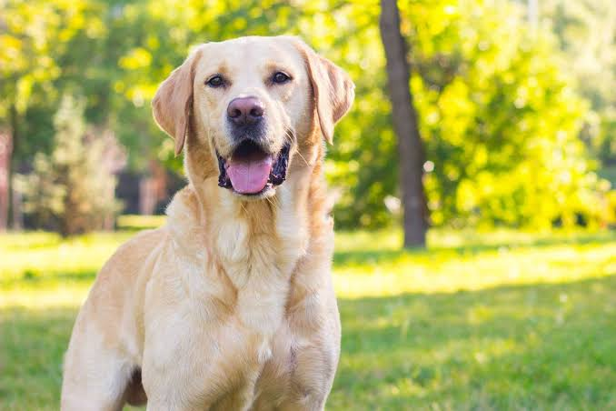
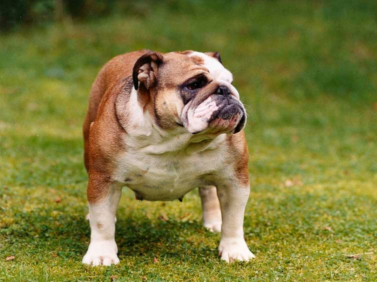
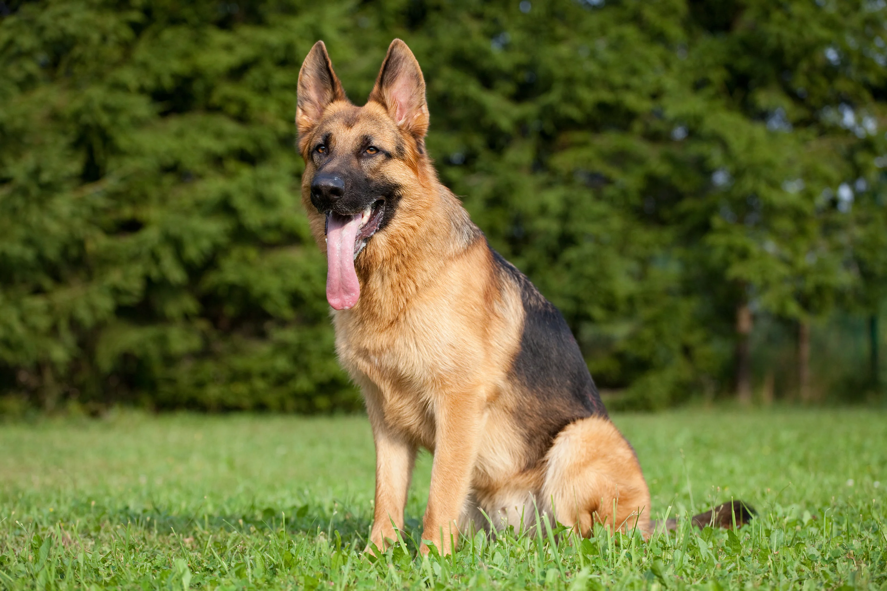

Labrador Retriever
Labradoren är en av de mest populära hundraserna i världen. De är vänliga, intelligenta och lättlärda. Labradorer kräver regelbunden motion och mental stimulans.
Att tänka på: Labradorer kan bli överviktiga om de inte får tillräckligt med motion och rätt kost. De behöver också socialt umgänge för att hålla sig glada och hälsosamma.
Engelsk Bulldog
Engelska bulldogar är kända för sin vänliga natur och lugna temperament. De har dock vissa hälsoproblem som kräver uppmärksamhet.
Att tänka på: Bulldogs kan ha andningsproblem på grund av deras korta nos. Det är viktigt att undvika överansträngning, särskilt i varmt väder.
Schäfer
Schäfer är en mycket intelligent och mångsidig hundras. De är ofta använda som tjänstehundar på grund av deras höga arbetskapacitet.
Att tänka på: Schäferhundar behöver mycket motion och mental stimulans. De kan utveckla ledproblem om de inte får rätt vård och träning.